Chapter 2 Describing the World With Data
This Chapter is designed to work with Lecture 2.
Here, I will demonstrate a number of important concepts about data displays and descriptions.
First, let’s find some data to play with. In the following examples I will use some data from the Johns Hopkins Coronavirus Resource Center as at April 26 2022, which contains data by country about cases, deaths, and mortality for COVID.
However, as of 2023, the JHCRC ceased collecting data, and their archival data is available on their github:
https://github.com/CSSEGISandData/COVID-19
However, I do think it would be quite hard to recreate the exact snapshot in time of the data set we are using here.
I’m going to use the top 20 countries in terms of raw number of cases
To demonstrate how we can easily change people’s views of a data set, let’s run some bar charts:
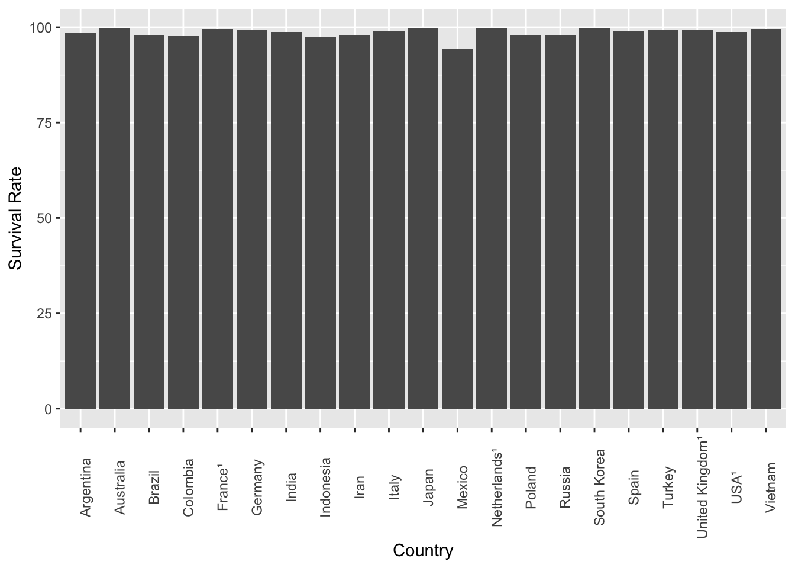
One thing we could do is change the orientation of the bars…
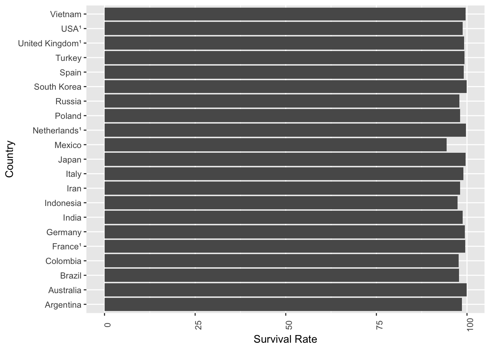
That’s nice. The basic conclusion we can draw is everyone is pretty much the same in terms of survival rate, although Mexico is a bit down.
Interestingly, it seems to me that the variation is more pronounced in this presentation where you look ‘down’ a line of results, than above where you look across. I’m not aware of any theory behind why, or even if anyone has ever noted that before, but it’s definitely something I noticed here.
Either way, if I wanted to make everyone think that COVID survival rates were really different, there’s a simple trick I could use:
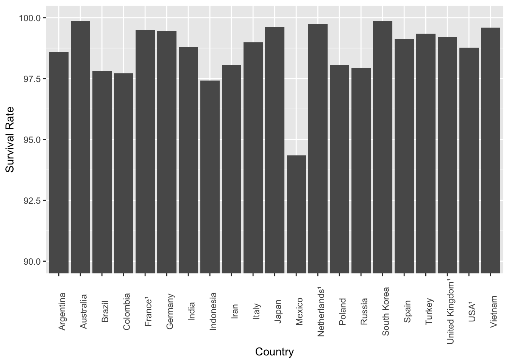
Wow, how do you like that! What’s different?
Changing the scale of the y-axis is an old trick, and when used to manipulate opinion it’s a bad thing. However, there is a case to say we need to know what we want to say, before we decide how to say it. When does ‘making sure we see the right message’ move into ‘outright manipulation / misrepresentation?’.
Here’s another common way this type of data is presented in media and non-scientific reports:
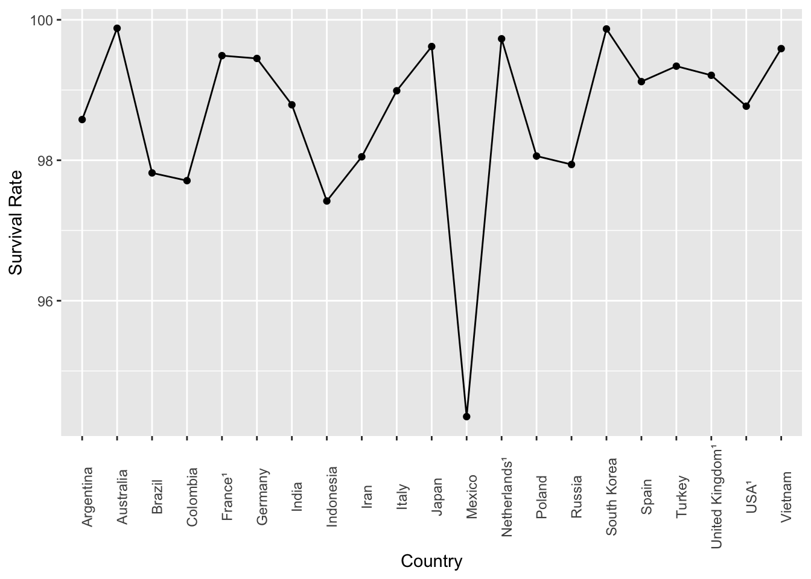
or a variant:
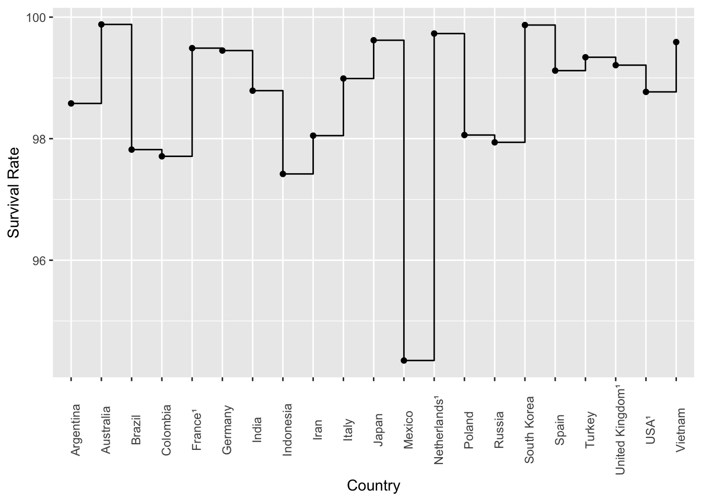
Technically, it’s wrong to present this data in a line chart, because it is discrete values and does not represent a trend, but it is surprisingly common - probably because it ‘looks more sciency’…
Ironically, there is some logic behind using line charts with this sort of data, depending on what you are trying to get across - let’s move to excel to demonstrate…
While we’re at it, we’ll also look at pie charts…
Quick transition to MS Excel, then back to the slides…
2.1 When the numbers mislead: relative and absolute risk
Everything so far in this chapter has been about pictures that mislead: axes that start in the wrong place, baselines chosen to flatter. The same trick works with numbers alone, and it’s arguably more dangerous, because a number feels more objective than a picture. The example I use in the lecture is one I have a personal stake in.
A few years ago a set of headlines did the rounds suggesting that bacon, ham and sausages belonged in the same bracket as cigarettes. The research behind the most recent wave was a good study, in a good journal, using the UK Biobank, a huge and genuinely excellent dataset (Bradbury et al. 2020). Its headline finding was that each extra 25 grams of processed meat a day was associated with a 19 percent higher risk of bowel (colorectal) cancer. I ate a ham sandwich pretty much every day for years, and as a parent I wanted to know whether I should care what my kids ate. So I did what I think anyone reading research should do, and worked through it step by step.
First, is the amount realistic? The authors helpfully translate 25 grams into about one rasher of bacon or one slice of ham. That’s not an absurd dose like the ones behind some food scares. Plenty of people eat that much, so this is worth taking seriously.
Second, is it causal? This is a correlational study, and Chapter 4 will give you a whole toolkit for worrying about that. Maybe heavy processed-meat eaters also drink more, or move less, or eat fewer vegetables. The authors adjusted for a long list of such factors, and the association survived. More importantly, it sits within a much larger body of evidence that led the International Agency for Research on Cancer to classify processed meat as a cause of bowel cancer (Bouvard et al. 2015). So let’s accept that the link is probably real.
Third, 19 percent of what? This is the question the headlines skipped. A 19 percent increase is a relative risk: it tells you how much your existing risk goes up, not what your risk is. To turn it into something you can use, you need the base rate. In the UK, roughly 1 in 17 men and 1 in 20 women will be diagnosed with bowel cancer in their lifetime (Cancer Research UK 2026), so call it about 6 in every 100 people. Add 19 percent to 6 and you get a little over 7. In absolute terms, then, the extra daily slice moves you from about 6 in 100 to about 7 in 100, as Figure 2.1 shows.
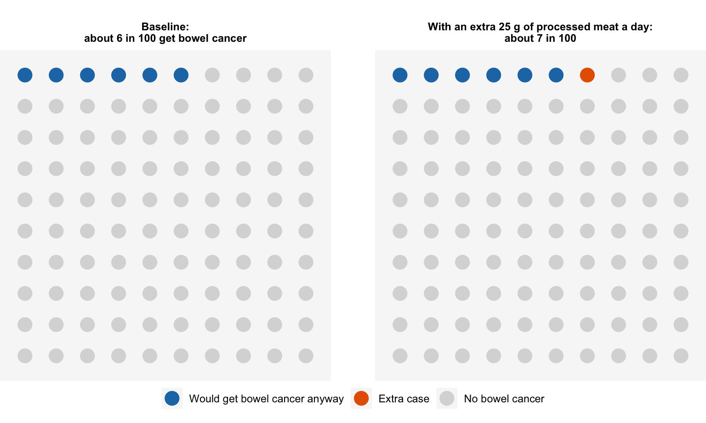
Figure 2.1: The same result in absolute terms. Each dot is one person. A 19 percent increase in relative risk moves bowel cancer from about 6 in 100 people to about 7 in 100: one extra case (orange). Figures are rounded; see text.
Notice the language trap here. The risk went up by 19 percent, but by only about one percentage point. Both statements are true. Mixing them up is one of the most common errors in the whole of quantitative reporting, and you’ll see it made by journalists, managers, and, I’m sorry to say, academics.
Another way to say the same thing is this. If about 90 people each ate an extra slice of ham every day for the rest of their lives, we’d expect roughly one extra case of bowel cancer among them. That’s a rough translation. It stretches a result from about six years of follow-up across a lifetime, and it treats the population’s average risk as everyone’s starting point. But it is the right order of magnitude, and it tells you far more than “19 percent” does.
Fourth, why the comparison with cigarettes? Processed meat and tobacco sit in the same IARC category. But that category describes how strong the evidence is that something causes cancer, not how large the risk is (International Agency for Research on Cancer 2015). For smoking, the numbers are in a different universe. Roughly 1 in 100 lifelong non-smokers in the UK will get lung cancer, compared with more than 20 in 100 people who smoke a pack a day (Science Media Centre 2015). That’s a relative risk of around 20, which, as you’ll see in Chapter 4, is the kind of number that is very hard to explain away by confounding. Nineteen percent is a relative risk of 1.19.
Finally, whose risk is it? Here it’s worth holding two ideas at once. For me, one extra case per 90 or so lifelong ham-eaters is a small risk, and I’m entitled to weigh it against how much I like a ham sandwich. The numbers can’t tell me how to make that trade. But across a whole country, small individual risks add up: Cancer Research UK estimates that around 13 percent of UK bowel cancer cases are caused by eating processed meat (Cancer Research UK 2026). “Trivial for me” and “important for public health” can both be true, and a lot of confused arguments come from people talking about one while the other person is thinking about the other.
It’s also worth knowing that an average can hide a lot. In the Biobank study, the association with processed meat showed up in men but not in women. A single headline number describes a population, not a person, and certainly not you.
2.2 Summarizing Data with Numbers
Above, we simply plotted a single variable of interest, and showed that some very basic changes to how it was displayed had the potential to ‘lead’ the reader to different conclusions. Even that simple tweaking is a powerful way to change opinion, and used in the wrong way can be very misleading.
Now, let’s think about the idea of an even simpler way to describe data - by summarizing it with just some numbers.
For this example, I am going to use data on GDP per head in 2020 for each nation, from the World Bank.
Before I do anything else, I’m going to graph it again. This time I will use a histogram, which is similar to a bar chart, but not the same thing.
Specifically, a bar chart is used when we are displaying discrete categories. So, above, we had 20 countries, and a single bar for each country.
A histogram is instead when we divide our data into ‘groups’ of similar values, which are called ‘bins’. Thus, each ‘bar’ on a histogram represents the number of elements (in this case, countries) which fall in that bin. So, in this case, we can divide the GDP variable into bins.
As an example, we can divide GDP per head into ‘bins’ of US$10000, and plot a histogram
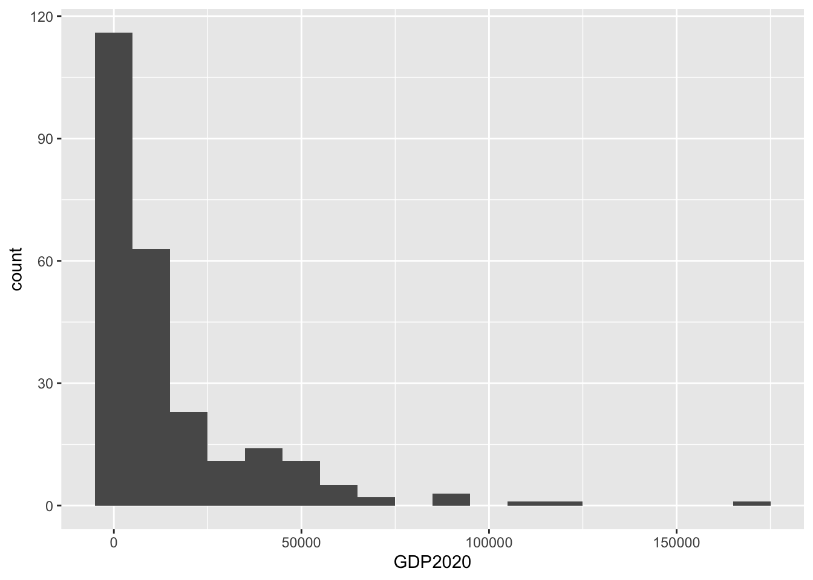
As you can see, there are nearly 120 countries in the first bin, which you can also see runs from -5000 to 5000 dollars. Of course, we know there are no countries with negative GDP per head, but this is just an artefact of the binning process.
This sort of chart gives us something very different to a bar chart. Instead, it is really a frequency distribution, and it charts the frequency of values of a given variable - in this case GDP per head.
So, here we have some idea of the distribution of the variable. It’s clearly skewed quite heavily, with some outliers at the high end.
Let’s move on to summarize this variable with some numbers:
##
## GDP2020
## --------------- -----------
## Mean 15162.61
## Std.Dev 22146.53
## Min 233.84
## Median 6117.49
## Max 173688.19
## N.Valid 251.00
## N 266.00
## Pct.Valid 94.36What we have here are the classic ‘summary statistics’ for 2020 GDP per head.
One thing missing - which admittedly is not very useful in this case, is the Mode, or the ‘most frequent’ value.
## [1] 1875.441There you have it, the mode is 1875.441.
One important thing to note here is that the word average is badly misused when talking about data. Specifically, the mean, median, and mode can all at one time or the other be referred to as the average value of a given variable. But, as you can see, they are all different numbers! The word ‘average’ is a very vague word to use in this context, so do be careful about when you use it. You should always default to using the specific term you are talking about.
A few other summary statistics are calculated for 2020 GDPph below
## Min. 1st Qu. Median Mean 3rd Qu. Max. NA's
## 233.8 2127.5 6117.5 15162.6 18072.4 173688.2 15## [1] 15944.94## [1] 173454.4What we have here now includes the range (173454.4) and the interquartile range (15944.94), which are both useful measures of how ‘spread out’ the data is.
Each of the summary numbers above has strengths and weaknesses when describing different types of data. Here, we will mainly talk about the sensistivity to outliers.
Specifically, the median and interquartile range are less sensitive to outliers as measures of central tendency and range respectively than their counterparts the mean and the range. So, that’s why you commonly see the median used so frequently in these sorts of situations.
But, what do we mean by outliers? Let’s look at this in the context of another graphical display, the box plot.
2.3 Box Plots
The box plot (and the other displays below) are criminally underused in my opinion. Most of us calculate a box plot at school, and then never again. But, it’s a really useful way to understand a data set.
Let’s do a boxplot for the 2020 GDPph data:
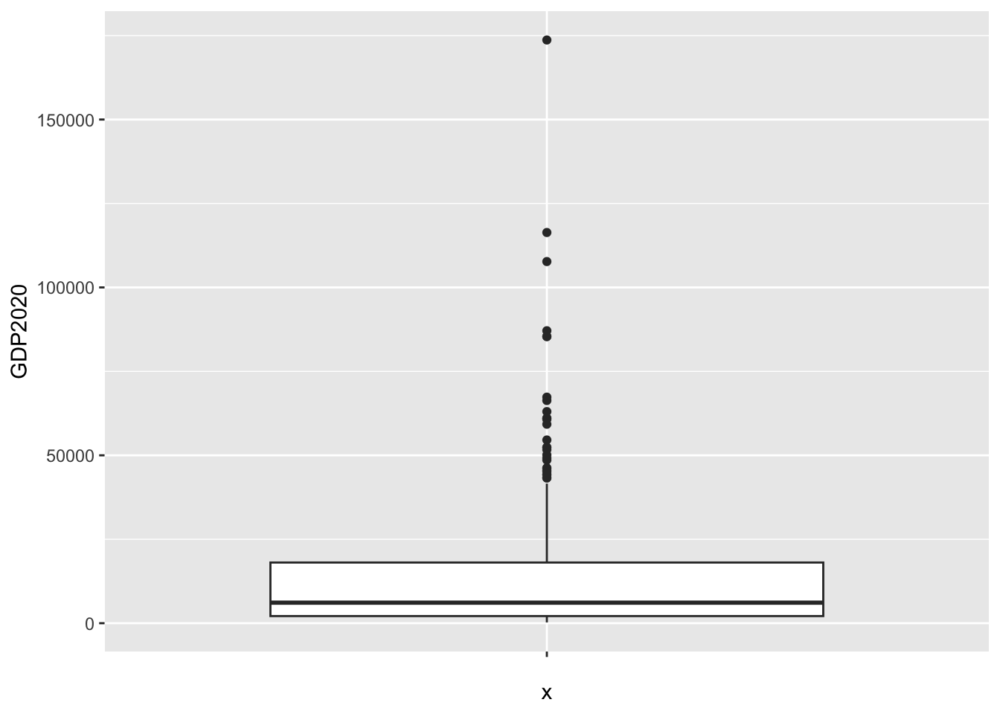
A box plot presents a lot of information very efficiently. The median is the thick horizontal, the white rectangle is bounded by the interquartile range, and outliers are represented as dots.
We can see here that the data is very skewed, and there are some very significant outliers at the high end (no prizes for guessing which countries they are).
A weakness of a box plot is that it doesn’t actually show the distribution of the data. One way to do this is to add what is called jitter, which actually plots the values of each case, with a ‘jitter’ to avoid overlapping identical values.
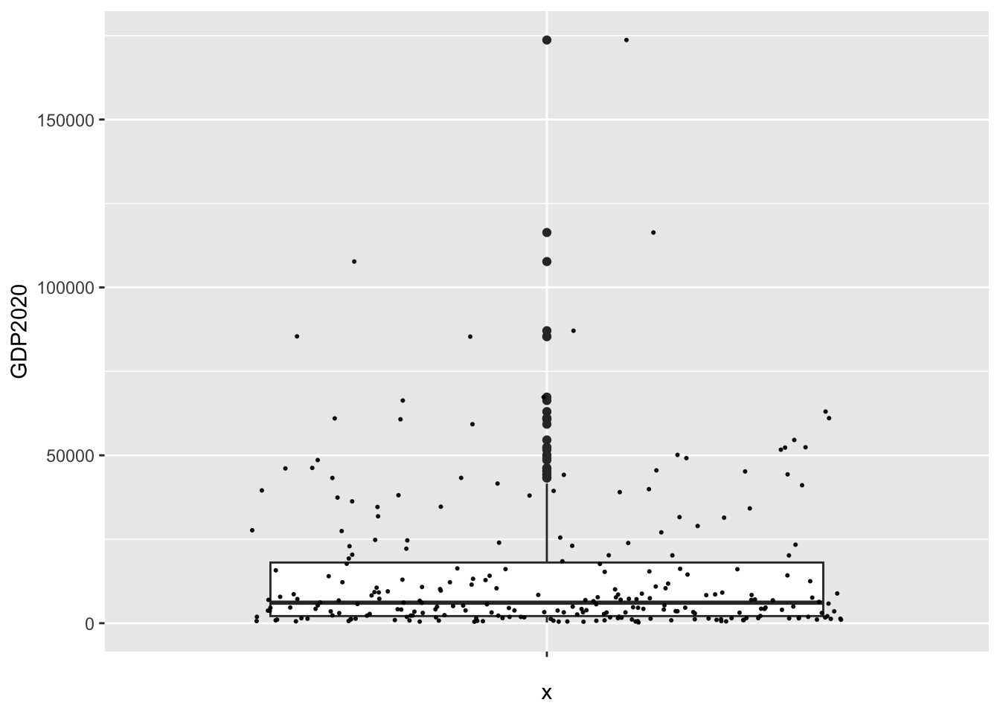
So, we can see here that most of the data is clustered towards the bottom of the range - i.e. very low GDPph. This is of course the same conclusion as the historgram allowed us to draw. But, the box plot also gives us plenty of other information about the variable.
Even so, while box plots are nice, they can also obscure important facts about the distribution. Adding the jitter helps, but there are other ways to display this type of data that make the distribution more obvious.
2.4 Violin Plots and Ridge Plots
Here, I’m going to give you a set of even more underused data displays, which can show some powerful things about variables.
In order to do so, I am going to simulate some data, to make sure it has exactly the features I want to show.
First, let’s create the data and use box plots to display it, such as you are already experienced with above.
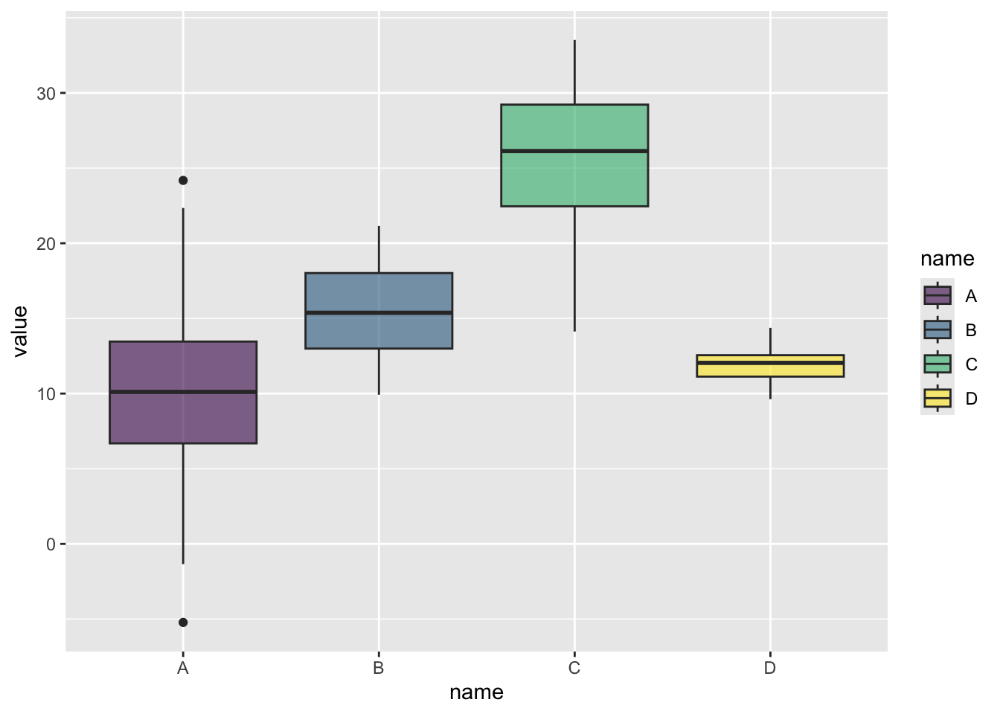
That’s all very well, but as we know, this can obsure the distribution. So, let’s add jitter:
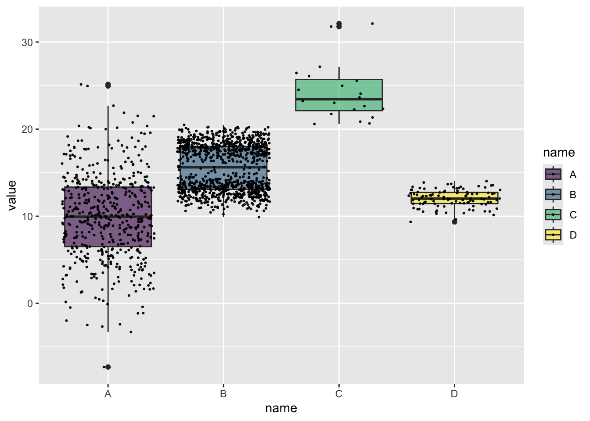
Well, look at that. B has what is called a bimodal distribution.
Lets look at what is called a violin plot to emphasize this:
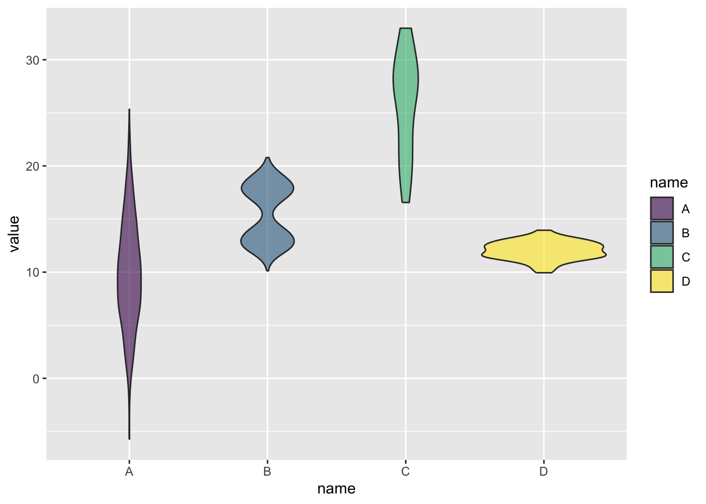
Neat! You can see how the violin plot really emphasizes the differences in the distributions, which are totally obscured by the box plots, and only partially shown by adding the jitter.
Another way to visualize this is with ridges, which basically compare the distributions of variables together:
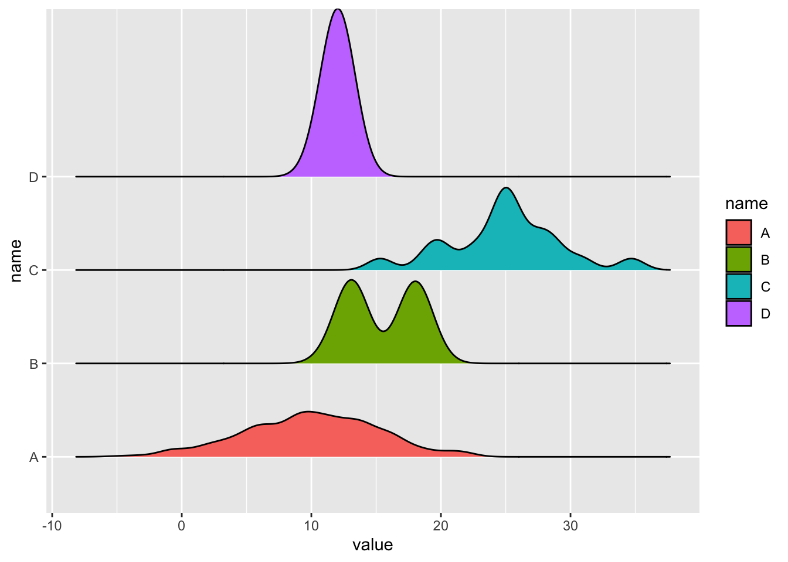
These are really cool in my view. And, if you are asking me, my preference in this type of situation would be to combine jittered box plots, which show the basics, and emphasize the outliers and summary numbers, with ridge plots, which show a really nice visualization of the distributions of each variable. Taken together, these plots allow us to understand a surprisingly large amount of important information about variables.
OK, let’s move back to the slides to discuss another crucially important concept related to data distributions: transformations.
Back to slide deck
2.5 Transformations
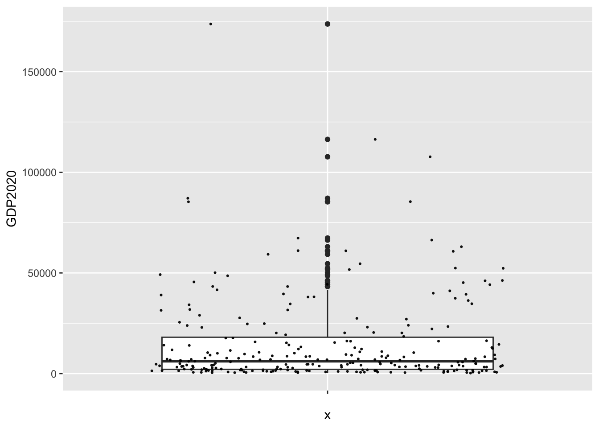
As you can see, the data is heavily skewed, or ‘squished’ towards the bottom. This makes it hard to see any patterns by eye.
We can make it easier to interpret by transforming the variable. Here, using a logarithmic transform.
Let’s run the box again:
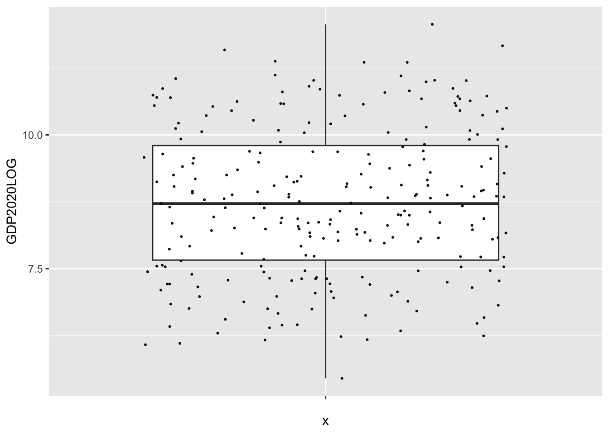
Nice, see how the spread is easier to interpret here? Log transforms are essentially ‘inverse exponentials’, so what they do is bring down extreme high outliers.
Let’s see this in some more plots:
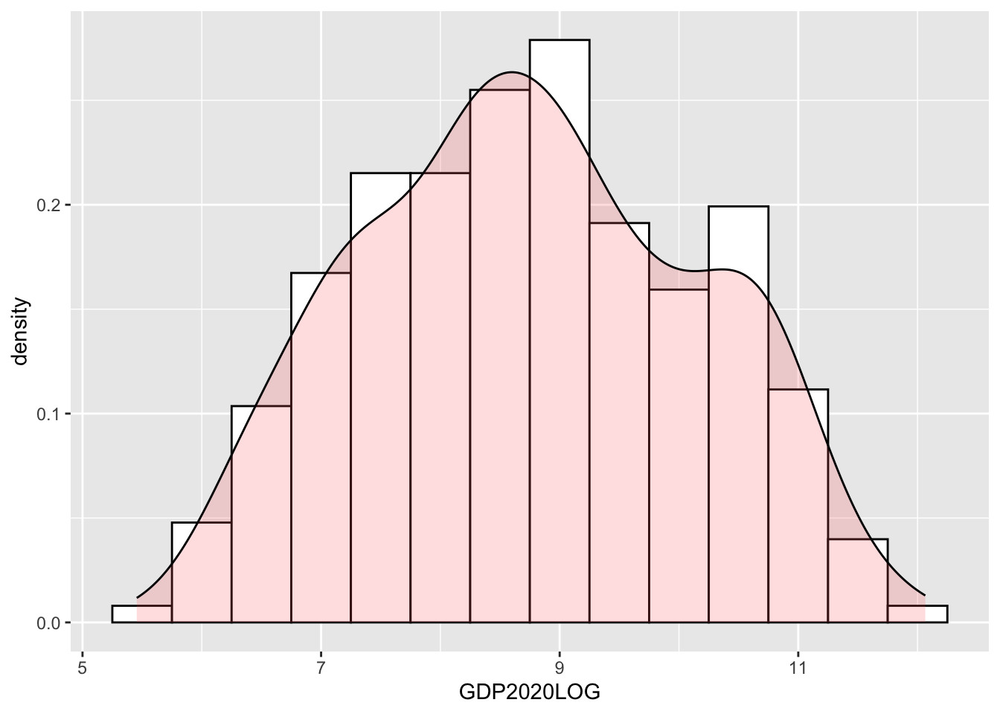
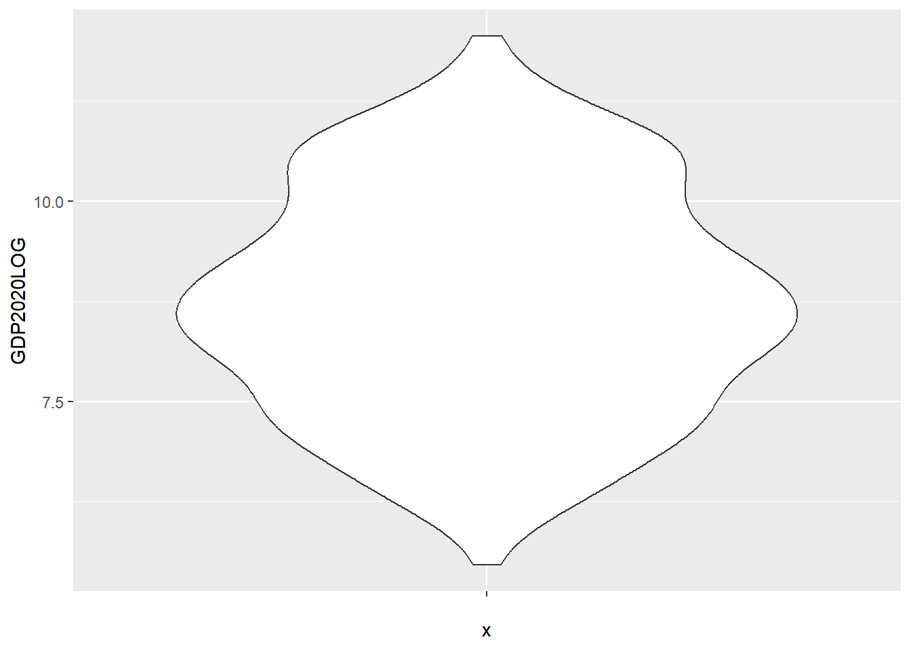
Compare the violin of the log transformed variable with the original:
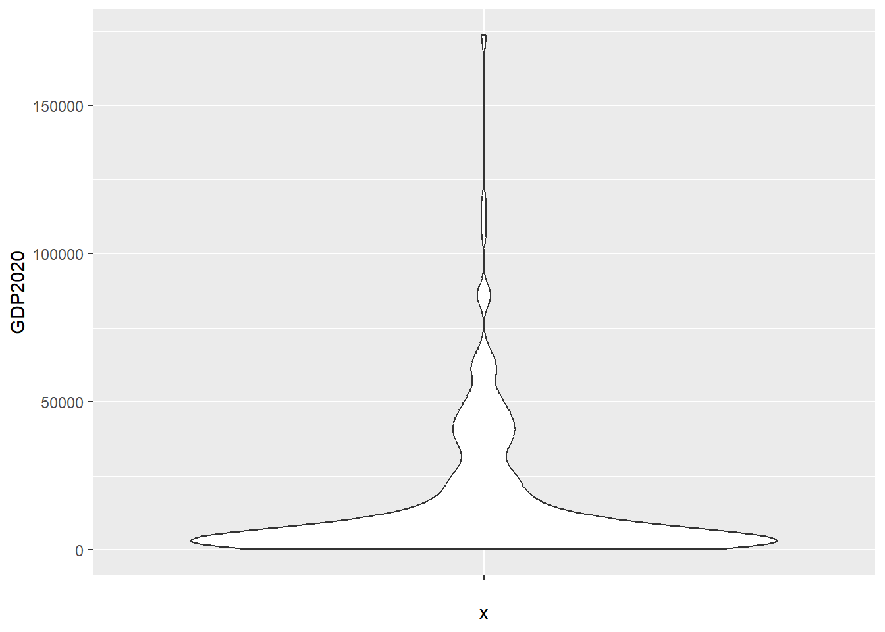
In fact, we can use the log transform to revisit some of our COVID data back in EXCEL…
Quick transition to MS Excel, then back to slides…
2.6 Reading the literature
The bacon example comes from medicine, but the trap it illustrates is everywhere in management research. Almost every effect you’ll read about is reported relative to something, and the something is often left out, buried in a table, or never mentioned at all.
2.6.1 Where you’ll meet this
Ratios. Relative risks, odds ratios and hazard ratios all appear in management papers, usually from models predicting whether something happens: an employee leaves, a firm adopts a practice, a customer churns. Every one of them is a relative number, so every one of them needs a base rate before it means anything. A hazard ratio of 1.5 for employee turnover means one thing if the baseline is 30 percent a year and something much smaller if it’s 1 percent.
Odds ratios need extra care. When the outcome is rare, an odds ratio and a relative risk are almost the same, which is why people swap them freely. When the outcome is common, which many management outcomes are, the odds ratio exaggerates. Suppose turnover is 40 percent in one group and 50 percent in another. The relative risk is 1.25: the second group is a quarter more likely to leave. The odds ratio is 1.5. Same data, and the number that sounds 50 percent bigger is the one that gets reported (Zhang and Yu 1998).
Percent versus percentage points. Conversion rates, response rates, market shares and turnover rates are all percentages already, so changes in them can be described either way. A conversion rate going from 2 to 3 percent is a one-point increase and a 50 percent increase. Both are true, and a paper (or a consultant’s slide deck) will usually pick whichever sounds better for the argument being made.
Percentage effects from models. When a model uses the logarithm of an outcome such as sales or salary, its coefficients are usually read as percentage changes. They’re relative by construction, so the same question applies: a percentage of what? A 10 percent sales uplift means something very different for a corner shop than for a supermarket chain.
Standardised effect sizes. Cohen’s d and standardised regression coefficients express an effect relative to the spread of the data rather than in its natural units. They have real uses, and you’ll meet them properly in Chapter 8. But they share the weakness of all relative numbers: a “medium” standardised effect can be large or trivial in pounds, days or customers. Good papers translate back into natural units. It’s worth noticing when they don’t.
Pictures in papers. Everything earlier in this chapter applies to journal figures too. Watch especially for bar charts of means on a 1-to-7 rating scale whose axis starts at 4, and for interaction plots where two lines diverge dramatically across a range of barely a scale point.
2.6.2 The connection back
A truncated axis and a relative risk are the same trick. Each shows you a comparison with its anchor removed. The axis hides where zero is, and the relative risk hides the base rate. The defence is identical in both cases: go and find the anchor before you decide how impressed to be.
2.6.3 Questions worth asking
- Is this a relative or an absolute number? If it’s relative, where is the base rate?
- Percent or percentage points? Which one did the authors choose to put in the abstract, and why?
- Is it an odds ratio for a common outcome? If so, the effect is probably smaller than it sounds.
- What does it mean in natural units? Pounds, days, people, customers. If the authors never say, can you work it out from their descriptives table?
- Whose risk is this? An average across a population can hide groups where the effect is much larger, and groups where it’s absent. And a small effect on each person can still add up to a large effect across a population, or the other way round.
2.6.4 One red flag
The abstract that reports only the relative effect: “increased the likelihood of turnover by 50 percent,” with the base rate nowhere in sight. It’s not always an attempt to mislead, since journal word limits are real. But authors know which framing sounds more impressive, and a paper whose headline number only works without its anchor is telling you something. Go to the descriptives, find the base rate, and do the arithmetic from this chapter yourself. It rarely takes more than a minute.
2.6.5 If you want to read more
David Spiegelhalter’s The Art of Statistics (Spiegelhalter 2019) is the best general book I know on reading numbers sensibly, and it was Spiegelhalter’s explanation of the bacon story that first got me thinking about it properly. Gerd Gigerenzer’s Reckoning with Risk (Gigerenzer 2002) is older but still the classic on why relative risks mislead, and on how much clearer things get once you switch to natural frequencies like “7 in 100.”